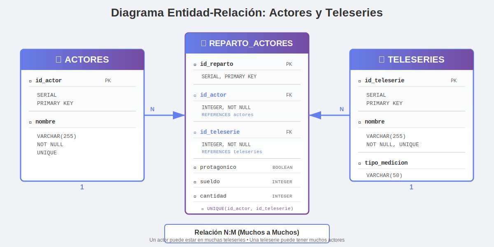

Descripción del Proyecto
Evaluación final del Módulo 5 del curso Fullstack de Talento Digital, enfocada en bases de datos relacionales con PostgreSQL. El proyecto trabaja con datos de dos teleseries chilenas: "Soltera Otra Vez" y "Papi Ricky".
2
Teleseries
30
Actores Totales
3
Tablas Normalizadas
Objetivos Cumplidos
Competencias Demostradas
- Consultas SQL complejas con diferentes tipos de JOIN
- Diseño e implementación de modelos entidad-relación
- Normalización de bases de datos (eliminación de redundancias)
- Operaciones CRUD (Create, Read, Update, Delete)
- Gestión de relaciones muchos a muchos (N:M)
- Uso de constraints y claves foráneas
Estructura del Proyecto
proyecto/
├── index.html # Portafolio web interactivo
├── assets/
│ ├── css/
│ │ └── styles.css # Estilos personalizados
│ ├── js/
│ │ └── query-executor.js # Motor de ejecución
│ └── img/
│ └── diagrama.svg # Diagrama ER visual
├── sql/
│ ├── complemento evaluacion módulo 5.sql
│ ├── Parte_1_Join.sql
│ └── Parte_2_modelo_entidad_relacion.sql
├── ScreenShots/
│ ├── Parte 1_ Joints/
│ └── Parte_2_-modelo_entidad_relacion/
├── diagrama.md # Documentación del diagrama
└── README.md # Documentación principal
Contenido de la Evaluación
Parte 1: Consultas con JOIN
- Consulta 1: Actores que participaron en ambas teleseries con suma de sueldos
- Consulta 2: Actores exclusivos de "Soltera Otra Vez" con sueldo mayor a 90
- Consulta 3: Actores con sueldo inferior a 85 que actuaron solo en una teleserie
Parte 2: Modelo Entidad-Relación
- Tabla actores: Almacena información de los actores (id_actor, nombre)
- Tabla teleseries: Información de las teleseries (id_teleserie, nombre, tipo_medicion)
- Tabla reparto_actores: Relación N:M entre actores y teleseries con atributos adicionales
Diagrama Entidad-Relación
Cardinalidad: Relación muchos a muchos (N:M) entre ACTORES y TELESERIES mediante la tabla intermedia REPARTO_ACTORES

ACTORES
- 🔑 id_actor (PK, SERIAL)
- 📝 nombre (VARCHAR, UNIQUE)
REPARTO_ACTORES
- 🔑 id_reparto (PK, SERIAL)
- 🔗 id_actor (FK)
- 🔗 id_teleserie (FK)
- ✅ protagonico (BOOLEAN)
- 💰 sueldo (INTEGER)
- 🔢 cantidad (INTEGER)
TELESERIES
- 🔑 id_teleserie (PK, SERIAL)
- 📝 nombre (VARCHAR, UNIQUE)
- 📊 tipo_medicion (VARCHAR)
Características del Modelo
- Eliminación de redundancia mediante normalización
- Un actor puede participar en múltiples teleseries
- Una teleserie puede tener múltiples actores
- Constraint UNIQUE evita duplicados (mismo actor en misma teleserie)
- Cascada en eliminaciones para mantener integridad referencial
Datos Iniciales
Tablas originales con información de ambas teleseries.
Tabla: reparto_soltera_otra_vez
-- Estructura de la tabla Soltera Otra Vez DROP TABLE IF EXISTS reparto_soltera_otra_vez; CREATE TABLE reparto_soltera_otra_vez ( nombre VARCHAR(255) NOT NULL, temporadas INTEGER, protagonico BOOLEAN, sueldo INTEGER, PRIMARY KEY (nombre) ); -- Datos (19 actores) INSERT INTO reparto_soltera_otra_vez VALUES ('Paz Bascuñán', 3, true, 100), ('Pablo Macaya', 3, true, 100), ('Cristián Arriagada', 3, true, 95), -- ... (16 actores más)
Tabla: reparto_papi_ricky
-- Estructura de la tabla Papi Ricky DROP TABLE IF EXISTS reparto_papi_ricky; CREATE TABLE reparto_papi_ricky ( nombre VARCHAR(255) NOT NULL, capitulos INTEGER, protagonico BOOLEAN, sueldo INTEGER, PRIMARY KEY (nombre) ); -- Datos (17 actores) INSERT INTO reparto_papi_ricky VALUES ('Jorge Zabaleta', 135, true, 100), ('Belén Soto', 135, true, 100), ('Tamara Acosta', 135, true, 100), -- ... (14 actores más)
Estadísticas: Se identificaron 6 actores compartidos entre ambas teleseries: Tamara Acosta, Silvia Santelices, Alejandro Trejo, Grimanesa Jiménez, Luis Gnecco y Héctor Morales.
Parte 1: Consultas con JOIN
Consulta 1: Actores en Ambas Teleseries
Obtener todos los actores que participaron en ambas teleseries, mostrando los sueldos individuales y la suma total.
SELECT s.nombre, s.sueldo AS sueldo_soltera_otra_vez, p.sueldo AS sueldo_papi_ricky, (s.sueldo + p.sueldo) AS suma_sueldos FROM reparto_soltera_otra_vez s INNER JOIN reparto_papi_ricky p ON s.nombre = p.nombre ORDER BY s.nombre;
Consulta 2: Actores Exclusivos de "Soltera Otra Vez"
Obtener actores que solo participaron en "Soltera Otra Vez" con sueldo mayor a 90.
SELECT s.nombre, s.temporadas, s.protagonico, s.sueldo FROM reparto_soltera_otra_vez s LEFT JOIN reparto_papi_ricky p ON s.nombre = p.nombre WHERE p.nombre IS NULL AND s.sueldo > 90 ORDER BY s.sueldo DESC;
Consulta 3: Actores con Sueldo Bajo en Una Sola Teleserie
Obtener actores con sueldo inferior a 85 que actuaron solo en una de las teleseries.
SELECT COALESCE(s.nombre, p.nombre) AS nombre, CASE WHEN s.nombre IS NOT NULL AND p.nombre IS NULL THEN 'Soltera Otra Vez' WHEN p.nombre IS NOT NULL AND s.nombre IS NULL THEN 'Papi Ricky' END AS teleserie, COALESCE(s.sueldo, p.sueldo) AS sueldo FROM reparto_soltera_otra_vez s FULL OUTER JOIN reparto_papi_ricky p ON s.nombre = p.nombre WHERE (s.nombre IS NULL OR p.nombre IS NULL) AND COALESCE(s.sueldo, p.sueldo) < 85 ORDER BY sueldo DESC, nombre;
Parte 2: Modelo Normalizado
Normalización completada: Se creó un modelo relacional que elimina la redundancia de datos y permite una gestión eficiente de la relación muchos a muchos entre actores y teleseries.
1. Creación de Tablas
-- Eliminar tablas si existen DROP TABLE IF EXISTS reparto_actores; DROP TABLE IF EXISTS teleseries; DROP TABLE IF EXISTS actores; -- Tabla actores CREATE TABLE actores ( id_actor SERIAL PRIMARY KEY, nombre VARCHAR(255) NOT NULL UNIQUE ); -- Tabla teleseries CREATE TABLE teleseries ( id_teleserie SERIAL PRIMARY KEY, nombre VARCHAR(255) NOT NULL UNIQUE, tipo_medicion VARCHAR(50) ); -- Tabla reparto_actores (relación N:M) CREATE TABLE reparto_actores ( id_reparto SERIAL PRIMARY KEY, id_actor INTEGER NOT NULL, id_teleserie INTEGER NOT NULL, protagonico BOOLEAN NOT NULL, sueldo INTEGER, cantidad INTEGER, FOREIGN KEY (id_actor) REFERENCES actores(id_actor) ON DELETE CASCADE, FOREIGN KEY (id_teleserie) REFERENCES teleseries(id_teleserie) ON DELETE CASCADE, UNIQUE(id_actor, id_teleserie) );
2. Consulta sobre el Modelo Normalizado
Mostrar todas las teleseries y sus actores protagónicos con información completa.
SELECT t.nombre AS teleserie, a.nombre AS actor, r.sueldo, r.cantidad, t.tipo_medicion, CASE WHEN t.tipo_medicion = 'temporadas' THEN CONCAT(r.cantidad, ' temporadas') WHEN t.tipo_medicion = 'capitulos' THEN CONCAT(r.cantidad, ' capítulos') END AS participacion FROM teleseries t INNER JOIN reparto_actores r ON t.id_teleserie = r.id_teleserie INNER JOIN actores a ON r.id_actor = a.id_actor WHERE r.protagonico = true ORDER BY t.nombre, r.sueldo DESC, a.nombre;
Ventajas del Modelo Normalizado
- Eliminación de redundancia en nombres de actores
- Facilita la adición de nuevas teleseries sin duplicar actores
- Permite consultas más eficientes con JOINs
- Mantiene integridad referencial automáticamente
- Escalable para agregar más atributos a actores o teleseries
Evidencias del Desarrollo
Nota: Las capturas de pantalla demuestran la ejecución exitosa de las consultas SQL en PostgreSQL.
Archivos del Proyecto
complemento evaluacion módulo 5.sql- Datos inicialesParte_1_Join.sql- Consultas con JOINParte_2_modelo_entidad_relacion.sql- Modelo normalizadodiagrama.md- Documentación del diagrama ERREADME.md- Documentación del proyectoLink GitHub.txt- Enlace al repositorio
Capturas de Pantalla
Las evidencias visuales se encuentran en la carpeta ScreenShots/:
- Parte 1_ Joints/ - Ejecución de consultas con JOIN
- Parte_2_-modelo_entidad_relacion/ - Implementación del modelo ER